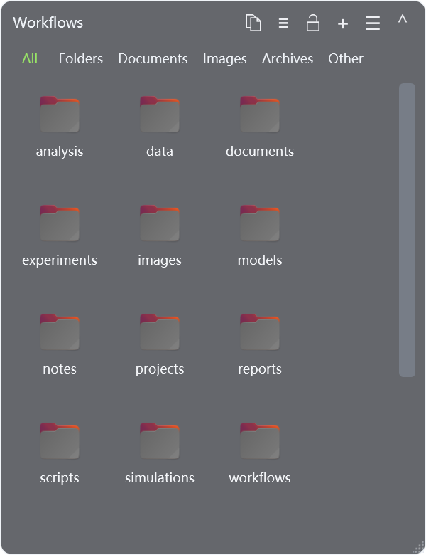

One folder. One box.
Bind each box to its own folder, with a custom name, opacity and position. Switch between icons and lists, or collapse a box to its header.
A lighter desktopWINDOWS DESKTOP × LINUX WORKSPACE
Browse WSL2 folders in desktop boxes.
Open files with their default Linux apps through WSLg.
v1.0.0Single-file EXEGPL-3.0
Requires Windows, WSL2 / WSLg and Linux GUI dependencies. See requirements

/home/you/DocumentsCONNECT YOUR WORKFLOWS
Bind each box to its own folder, with a custom name, opacity and position. Switch between icons and lists, or collapse a box to its header.
A lighter desktopCopy or move files to and from Windows Explorer. Keep the familiar copy, cut and paste actions.
Files across systemsDouble-click to use the Linux default app, or choose another app from the context menu. File icons and thumbnails come from Linux.
Your familiar Linux toolsLESS FRICTION. MORE ROOM.
Keep your everyday folders in sight without constantly switching between two file managers.
Need a clear desktop? Double-click an empty desktop area. You can also restore all boxes from the tray.
Press F2 to rename, Enter to confirm or Esc to cancel. Normal deletion uses Linux Trash so files can be restored.
Folder reads, thumbnails and app launches use separate workers. Lists load visible rows; hidden boxes pause pending thumbnail work.
GET STARTED
Use Windows 11 or a Windows 10 version with WSLg support. Install and start a WSL2 distribution.
wsl --installMicrosoft WSLg setup guide ↗Run the commands below in an Ubuntu / Debian terminal. Other distributions need equivalent GIO / GTK packages.
sudo apt update
sudo apt install python3 python3-gi gir1.2-gtk-3.0 dbus libglib2.0-bin libgdk-pixbuf2.0-binRun the versioned EXE without any adjacent Python scripts. Choose a distribution and folder in Folder settings.
Install your Linux apps and configure their default file associations inside the distribution.
View releases ↗BEFORE YOU DOWNLOAD
Yes. They still need WSL2 / WSLg, Python, GIO / GTK and the Linux apps they want to use. WSLBox discovers their distribution and home directory; it does not depend on the developer's username or paths. Support for every distribution, ARM64 and Windows Server has not been verified.
No. GUI apps appear through WSLg. X11 apps run through XWayland; apps that support Wayland keep their own backend.
Normal deletion uses Linux Trash, which you can open from the menu with a Linux file manager. Unsupported targets preserve the file and show an error. Shift+Delete permanently deletes only after confirmation.
Icon view still has room for improvement with very large directories. Windows Shell cannot fully preserve all Linux permissions, extended attributes or special-file properties. Dragging out and cutting symbolic links have protective restrictions.
The folder represents your Linux files. The four panes on the left represent Windows; the arrow points to the penguin to show a connection from Windows to Linux. WSLBox is not an official Microsoft product.
Start with a folder you use every day.